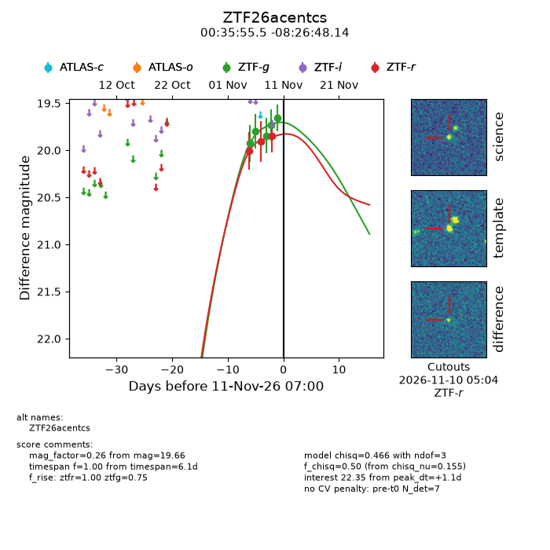
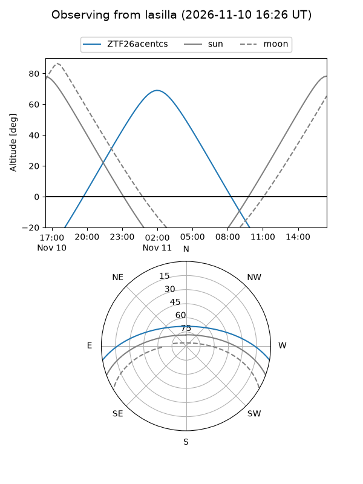
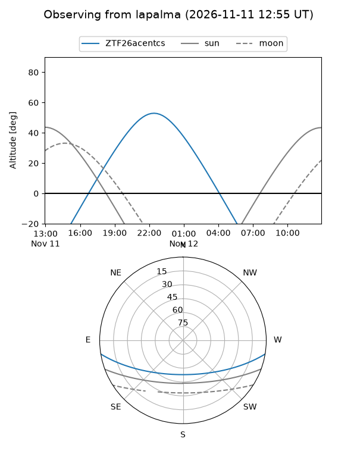
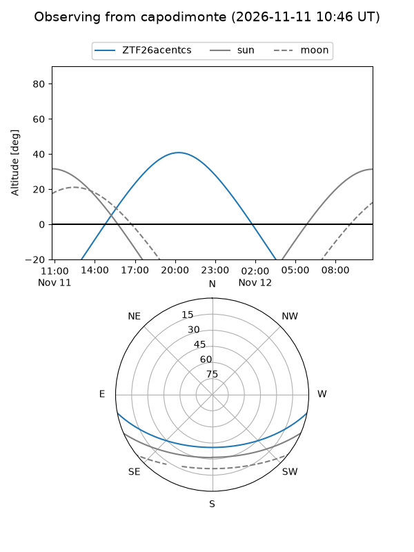
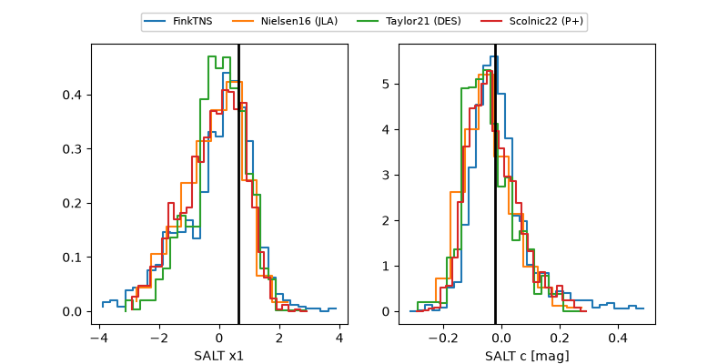

ZTF26acentcs
Target ZTF26acentcs at 2026-11-11 18:57
Aliases and brokers:
FINK-ZTF: ztf.fink-portal.org/ZTF26acentcs
Lasair-ZTF: lasair-ztf.lsst.ac.uk/objects/ZTF26acentcs
ALeRCE-ZTF: alerce.online/object/ZTF26acentcs
Direct TNS query: direct search
alt names
ZTF26acentcs (ztf,fink_ztf)
Coordinates:
equatorial (ra, dec) = 8.9811,-8.44670
equatorial (HMS+DMS) = 00:35:55.46,-08:26:48.14
galactic (l, b) = (111.0966,-70.96111)
Flags:
peak dt: +1.6
Photometry:
last ztfg=19.66, ztfr=19.85
5 ztfg, 3 ztfr detections
Lightcurve

Visibility



Additional plots
